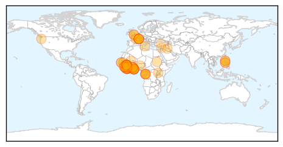

Unknown
30-Day Web Trend
0 alerts, 0 warnings

30-Day Twitter Trend
1 alerts, 0 warnings

Article Locations


Article Confidences

Top Articles:
- 0.917
- Chicago Tribune
- 0.917
- Chicago Tribune
- 0.917
- Chicago Tribune
- 0.917
- Chicago Tribune
- 0.917
- Chicago Tribune
- 0.917
- Chicago Tribune
- 0.917
- Chicago Tribune
- 0.917
- Chicago Tribune
- 0.917
- Chicago Tribune
- 0.917
- Chicago Tribune
- 0.917
- Chicago Tribune
- 0.917
- Chicago Tribune
- 0.917
- Chicago Tribune
- 0.917
- Chicago Tribune
- 0.917
- Chicago Tribune
- 0.866
- A fire-fighting aircraft works to obtain control over a forest fire raging near the Israeli village of Aminadav
- 0.866
- Russia's PM sees "full-scale" gas crisis with Kiev by autumn
- 0.866
- Benghazi suspect to remain in U.S. custody, judge orders
- 0.866
- Israeli police crime scene investigators carry evidence in the Jerusalem Forest
- 0.841
- Brucellosis infections spark warning for dog owners
- 0.814
- Annual drinking water quality report release
- 0.786
- Over 50 take ill after drinking contaminated water
- 0.774
- Free Malaysia Today
- 0.764
- Clean bill of health after JE scare
- 0.742
- Parents Concerned As Grant High Tuberculosis Investigation Draws To Close « CBS Sacramento
- 0.724
- Norovirus infections force Waco VA hospital to cancel July 4 event, stop admissions
- 0.712
- Latvia may declare emergency over swine fever
- 0.674
- Drug Resistance and Malaria in Mali
- 0.634
- Global health and the US Centers for Disease Control and Prevention
- 0.615
- African swine fever threatens Latvian pork
- 0.589
- The time to act against Tuberculosis is now
- 0.584
- Doctors’ strike paralyses services nationwide
- 0.558
- 'Stay calm before test results are out!'
- 0.553
- HHS Launches New Aging Brain Health, Alzheimer's Guide
- 0.547
- UN humanitarian chief voices concern over worsened situation in Iraq
- 0.541
- Japan to lift some sanctions on North Korea
- 0.541
- Sarkozy’s political ambitions dim amid corruption allegations
- 0.541
- Son-in-law retracts confession in Monaco heiress killing
- 0.541
- Palestinian youth killed in suspected revenge attack
- 0.541
- Palestinians react with indifference to murder of Israeli teens
- 0.541
- Beset by legal woes, Sarkozy blasts ‘political ends’
- 0.541
- French firms look to conquer Iran
- 0.541
- State of emergency proposed in Latvia in area hit by African swine fever :: The Baltic Course
- 0.519
- Under-Secretary-General for Humanitarian Affairs and Emergency Relief Coordinator, Valerie Amos statement on Iraq [EN/AR] - Iraq
- 0.512
- Maharashtra govt ropes in contractual doctors
- 0.505
- Tummy troubles: HMC catches over 100,000 gastro cases in three months
Top Tweets:
- 0.675
- “@WHO: On 22 June 2014 Iran reported an additional laboratory-confirmed Middle East respiratory syndrome case MERS”
- 0.540
- RT: On 25 and 27 June 2014 SaudiArabia reported additional 3 cases of Middle East respiratory syndrome MERS
- 0.506
- RT: Globally 824 lab-confirmed MERS cases incl at least 286 related deaths have officially been reported to WHO
Ebola
30-Day Web Trend
30-Day Twitter Trend
Article Locations

Article Confidences

Top Articles:
- 1.000
- Ebola outbreak could become pandemic
- 1.000
- Ebola Outbreak in West Africa Needs Stronger Response
- 1.000
- Ebola Outbreak Relief Work: Resources, stigma posing hurdles
- 1.000
- Ebola toll jumps to 467 as ministers mull response
- 1.000
- West African nations should be prepared for Ebola
- 1.000
- Fear and ignorance as ebola 'out of control' in parts of west Africa
- 1.000
- WHO warns ECOWAS Countries About Ebola -
- 1.000
- Emergency Meeting on Ebola Outbreak -
- 1.000
- UN seeks to calm Ebola fears in W.Africa
- 1.000
- Is Ebola headed our way?
- 1.000
- U.N. Seeks to Calm Ebola Fears in W.Africa — Naharnet
- 1.000
- WHO calls for emergency talks on Ebola outbreak
- 1.000
- DFA raises Alert Level 2 in Guinea, Liberia and Sierra Leone on Ebola outbreak
- 1.000
- Ebola Virus Cases and Deaths Continue to Increase in West Africa
- 1.000
- Ebola virus spreading amid urgent appeals for international help
- 1.000
- Ebola Epidemic is Worst in Recorded History
- 1.000
- 11 Things You Need To Know About The Ebola Epidemic That's Killing Thousands
- 1.000
- WHO Urges West Africa Governments to Agree on Ebola Response
- 1.000
- UN seeks to calm Ebola fears in W. Africa
- 1.000
- Emergency Ministerial Meeting on Ebola opens in Accra, Ghana - Guinea
- 1.000
- WHO calls emergency meeting on Ebola
- 1.000
- Ebola’s Deadly Spread in Africa Driven by Public Health Failures, Cultural Beliefs
- 1.000
- #Ghana hosts crisis talks as #Ebola toll rises
- 1.000
- Liberia: Expatriate medical doctor dies of Ebola
- 1.000
- Challenges Mount for Doctors Fighting Deadly Ebola Outbreak
- 0.999
- INTERVIEW-Experimental Ebola drugs should be tried in Africa, disease expert says
- 0.999
- Ebola toll jumps to 467 as ministers mull response
- 0.999
- Deadliest Ebola outbreak
- 0.999
- Kenya : Fear, suspicion undermine West Africa's battle against Ebola
- 0.999
- UPDATE 2-Fear, cash shortages hinder fight against Ebola outbreak
- 0.999
- Filipinos in west Africa warned vs Ebola
- 0.999
- WHO Disease Outbreak News on Ebola virus disease West Africaupdate
- 0.999
- Ebola outbreak: WHO calls for emergency talks as death toll reaches 467 in West Africa
- 0.999
- UN seeks to calm Ebola fears in W.Africa
- 0.999
- Health Ministers Tasked to Take Pragmatic Measures to Avert Cross Border Transmission of Ebola
- 0.999
- Ebola toll jumps to 467 as ministers mull response
- 0.999
- Sudan Vision Daily
- 0.999
- West African Ebola outbreak is deadliest on record
- 0.999
- Scientist who discovered Ebola: ‘This is unprecedented’ – Amanpour
- 0.998
- Fear, cash shortages hinder fight against Ebola outbreak
- 0.998
- Ebola outbreak: time to try experimental drugs, Jeremy Farrar says
- 0.998
- DFA raises Ebola alert in West African region
- 0.998
- Farsnews
- 0.997
- Red Cross removes staff from Ebola operations after Guinea knife threat
- 0.997
- Death toll at 467 in West Africa, WHO calls for emergency meeting
- 0.997
- Experimental Ebola drugs should be tried in Africa, disease expert says
- 0.997
- Fear, cash shortages hinder fight against Ebola outbreak
- 0.997
- African leaders seek solution to Ebola crisis
- 0.997
- Fear, cash shortages hinder fight against Ebola outbreak
- 0.997
- UPDATE 2-Fear, cash shortages hinder fight against Ebola outbreak
Showing top 50 articles...
Top Tweets:
-
No tweets found for Jul 02, 2014